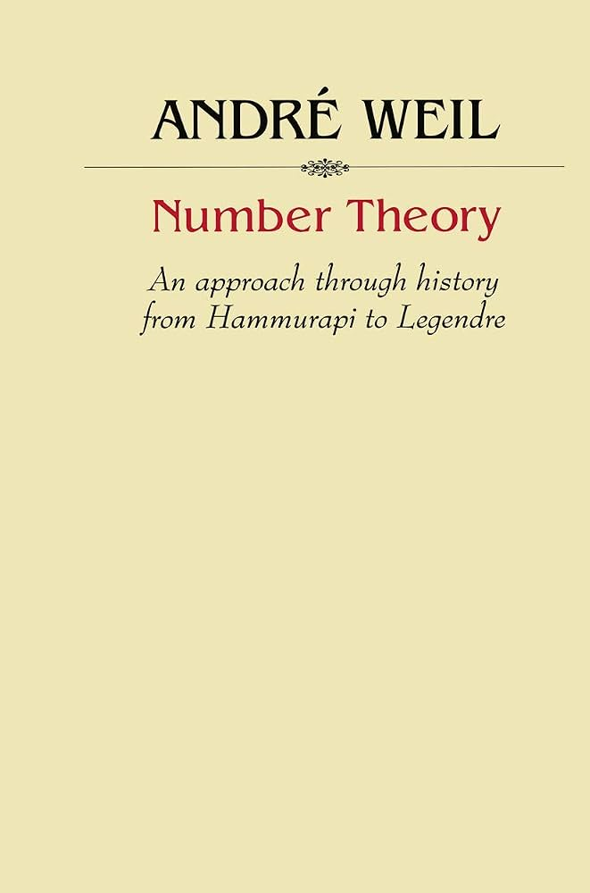

Number Theory: An approach through history from Hammurapi to Legendre

Quick Informations
Where to buy it: Amazon
Author: André Weil
Release date: January 1, 1984
Language: English
Personal Progress: Read completely.
Description
This book is perfect for anyone who would like to know more about the history of number theory. It is divided into four chapters: the first chapter covers all the traces of number theory before Fermat throughout various civilizations and accross multiple millenia; the second chapter focuses on Fermat; the third and longest chapter focuses on Euler; the fourth chapter focuses on Lagrange and Legendre. Naturally, for all mathematicians mentioned, only their work related to number theory is covered. The period covered by the book stops precisely right before Gauss's Disquisitiones
Prerequisites
This book assumes a certain familiarity with elementary number theory. It would be great to first read book Elementary Number Theory by David M. Burton for example. Sometimes, the book uses some concepts of abstract algebra, especially algebraic geometry, to translate some statements in modern terms but I wouldn't say that any of these notions are actually required.
What I liked
First, this book is very historically accurate and gives the precise reference for everything mentioned in it. This doesn't seem like much but this is exactly what the most well known book on the history of number theory (From Fermat To Minkowski) lacks. I really liked the fact that everytime I found a topic interesting, I could very easily find the precise article or letter online and read it entirely since the reference is given.
Moreover, the book really goes into the details of the subject. It feels like nothing is left off and it gives a very general and precise knowledge of the state of the theory of numbers at any time in history, as long as it's before Gauss's Disquisitiones. Again, this is something that doesn't apply at all to From Fermat To Minkowski.
Finally, and very importantly, the book is well written and the biographical elements the author chose to put are really well chosen. It is the kind of book that brings more life to mathematics, compared to most of mathematical textbooks. In conclusion, I would say that this book is what From Fermat To Minkowski should have been.
What I disliked
There are a few things that I didn't like about this book. First, even though the chapters are chronologically ordered, their content is not. I know that the author chose to organize the sections in each chapter per area of number theory instead of chronologically, but I would have really preferred the opposite. For example, the third chapter on Euler is really long and this way of organizing the chapter makes it seem like the book is not chronological at all. What I mean is that it doesn't really matter if the chapters are organized chronologically but the actual content is not.
Another important and related problem is that in the second chapter on Fermat, a lot of the proofs of Euler are presented to complete what Fermat ended up never proving, but most of the time it is not clear whether it is Fermat or Euler who is at the origin of a proof which is presented. This creates much confusion in many parts of the book, not only in the second chapter.
Finally, another problem that I noticed is that although the works of Fermat, Euler and Lagrange are presented in great details, this is not the case for Legendre. I don't understand why the author didn't mention Legendre's important contribution to the theory of elliptic integrals (which he did in details for Euler), which would later greatly influence Abel and Jacobi; or Legendre's conjecture on the prime counting function which I find important since it is directly related to Riemann's major paper of 1859. Another important example is that from the sole reading of the two sections on Legendre, it is impossible to determine whether Legendre proved the three-square theorem, even though the author mentions that topic, but he does it very briefly.
Further Readings
This book is the perfect prerequisite for Gauss's Disquisitiones Arithmeticae.